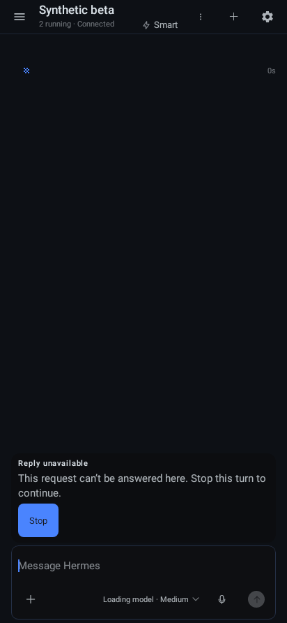

Actual Android ChatScreen/ViewModel/repository against unmodified public stock046. Synthetic auth and inert admitted handler. Native Robolectric Canvas API34, 412×892 mdpi, dark. No installed APK, physical IME, animation or accessibility claim.

Copy and Stop remain visible above composer. Actual click cancels captured beta turn while equal-ID alpha prompt remains parked, then next beta send completes. This original capture precedes later harness failure in retry timing; it is scoped evidence for this card/action only.
Desktop has no equivalent stock limitation: public native responses cannot settle another authority. This explicit recovery is classified mobile-adaptation. Existing Desktop reports and issues378/380 retain their original scope; no new full parity verdict.